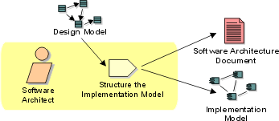

Disciplines >
Disciplines >
 Implementation >
Implementation >
 Workflow >
Structure the Implementation Model
Workflow >
Structure the Implementation Model
Disciplines >
Implementation >
Workflow >
Structure the Implementation Model
Workflow Detail:
|
Topics |
 |
The purpose of this workflow detail is to ensure that the implementation model is organized in such a way as to make the development of components and the build process as conflict-free as possible. A well-organized model will prevent configuration management problems and will allow the product to built-up from successively larger integration builds.
While the software architect has primary responsibility for the structure of the implementation model, the software architect's experience needs to include that of an integrator at the system level. They need experience in software build management, configuration management, and experience in the programming language in which the components to be integrated are written. Because the automation of integration will be handled by the integrator, the software architect need not be an expert in scripting or integration automation, but some familiarity with the topic will often help the build process go more smoothly.
Structuring the implementation model should be done in parallel with the
evolution of the other aspects of the architecture; failure to consider it early
in the architecting process may lead to poor organization of the implementation
and may impede the implementation and build process. In the worst case, a poorly
organized implementation model will impede parallel development of software by
the project team.
|
Rational Unified
Process
|